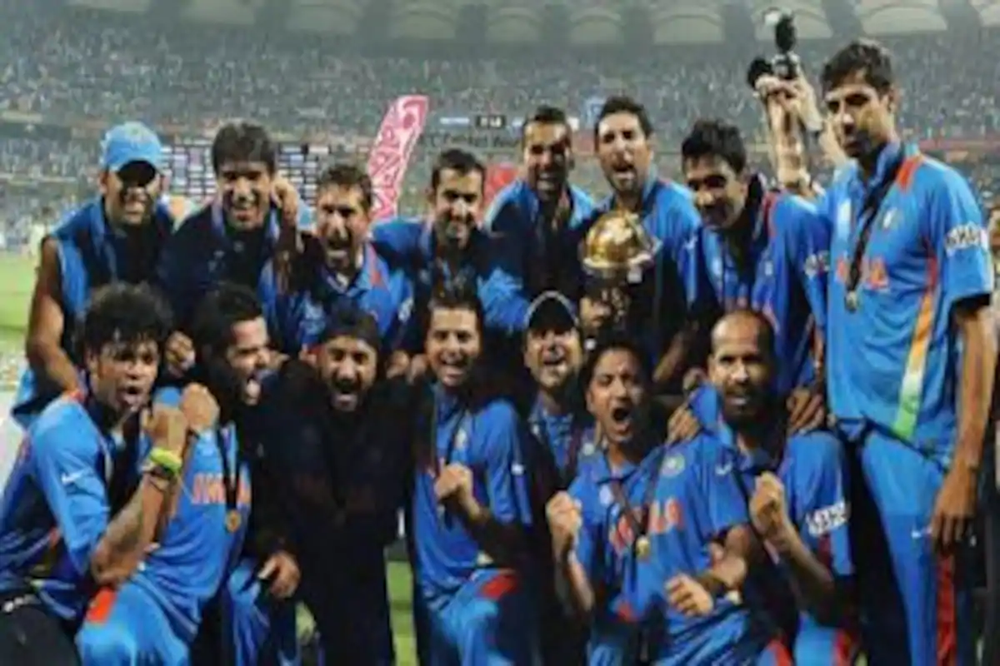
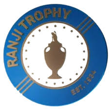

Cricket in India
Cricket
Cricket is India's most popular sport so far and is played almost everywhere. The Indian national cricket team won the 1983 Cricket World Cup, the 2013 ICC Champions, the 2007 ICC World Twenty20, the 2011 Cricket World Cup and shared the 2002 ICC Champions Trophy with Sri Lanka.The domestic competitions include the Ranji Trophy, the Duleep Trophy, the Vijay Hazare Trophy, the Irani Trophy and the NKP Salve Challenger Trophy. In addition the BCCI (Board of Control for Cricket in India) conducts the Indian Premier League, a Twenty20 competition which is one of the biggest sports leagues in the world and the biggest cricket league in the world.
IPL
The IPL is a professional Twenty20 cricket league in India contested during March or April and May of every year by eight teams representing 8 different cities in India. The league was founded by the Board of Control for Cricket in India (BCCI) in 2008. Before the series there is an auction to choose the players in your team. There are 8 teams in the season who play in a double round-robin format. In the playoffs, 1st place and 2nd place play in the semifinal 1 while 3rd and 4th place play in the Eliminator. The loser in the Eliminator will get eliminated from the tournament. The winner in the Eliminator will play the loser in semifinal 1 and that is called semifinal 2. The winner in semifinal 1 will play the winner in semifinal 2 in the final.
Ranji Trophy
The Ranji Trophy is a domestic first-class cricket championship played in India between mulitple teams representing regional and state cricket associations. The competition currently consists of 38 teams, with all 28 states in India and 4 of the 8 union territories having at least 1 representation. The competition is named after the first cricketer who played international cricket, Ranji Sinhji who was also known as 'Ranji'. 
Sachin Tendulkar
Sachin Tendulkar was one of the greatest cricketers of all time. He is known as the God of Cricket. Sachin was one of the key members during 1995-2007 for Team India in multiple formats. Sachin batted 329 Test match innings with an average of 53.79, he scored 51 centuries, 6 double-centuries and 68 half centuries. In ODIs he batted 452 innings with 18426 runs and 49 centuries, 1 double-centuries and 96 half-centuries. In T20Is he batted 1 inning, and unfortunetely got only 10 runs. In the IPL he batted 78 innings, got 2334 runs including 1 century and 13 fifties with an average of 33.83.When Sachin was bowling he bowled 145 Test innings and got 46 wickets, in ODIs he bowled 270 innings and got 154 wickets, in T20Is he played 1 inning and got 1 wicket and in the IPl he bowled 4 innings and got no wickets.

India's greatest batsmen of all times
- Sachin Tendulkar
- Sunil Gavaskar
- Sourav Ganguly
- Virat Kholi
- Kapil Dev
- MS Dhoni
- Zaheer Khan
- Rahul Dravid
- Anil Kumble
- Javagal Srinath
Click here to have a survey about India.